一
新店溪
流動，是不與巨石爭辯
童年的新店溪遭遇峽谷與險灘，激起無數水花。河流從不與擋路的巨石硬碰硬，它總是順應地形，繞道而行。
成為一條河，是學會「柔軟的堅持」。挫折不是終點，而是改變流向、激發創見的契機。
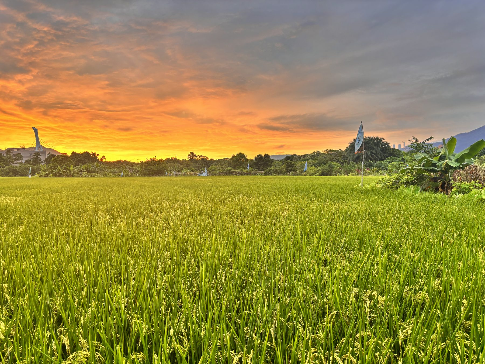
成為一條河
為一條被遺忘的舊河道，補上遲來的命名
序
我記得那個人。
我和弟弟放學到吃飯之間，是一段游手好閒的時間，父母完全知道的內容，大半都是我們編出來的情節。
我們有時會找鄰居小朋友來家裏玩，有時找不到他們，就會去三角公園賣賣自己畫的東西，然後會到河邊玩玩水，東逛逛西逛逛。
有一個人我們常常看到他。
⋯⋯

緣起
五分港溪在現代地圖上，常被當成排水溝，或者乾脆沒有名字。
這本書從植物學家牧野富太郎開始。他一生替無數植物命名，也留下一句話，成為全書的起點：
世上沒有雜草— 牧野富太郎
若沒有一株草是雜草，那麼也沒有一條河是「雜河」。以牧野的植物哲學為經，以五分港溪的蜿蜒身世為緯，這部散文想做的，不只是一條溪流的導覽，而是一場關於邊緣、命名與主體性的辯證——讓那些被標記為「雜」的生命與河流，在文字中重新獲得尊嚴。
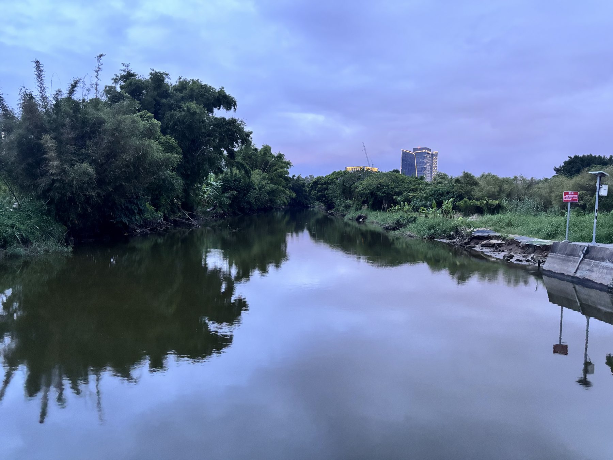
身世
五分港溪曾是雙溪河的自然主河道，蜿蜒流過洲美平原，是這片土地的主動脈。
1990 年代，城市防洪計畫為雙溪截彎取直。主流改道之後，這段舊河道被切割、拋棄，成了一截「斷掉的盲腸」——主流的孤兒，一段失去流動目標的廢河道。五分港溪的名字，便是從這場「手術」之後才開始的。
它被截斷、被污染、被忽視，但它依然是一條河。
溯源
把內雙溪古道的源頭，與五分港溪這段殘存的廢河道連在一起，便看見一滴水的一生：從陽明山森林的純淨出發，歷經人類文明的洗禮、截斷與遺忘，最後在都市邊緣掙扎求生。
高聳的闊葉林、細膩的苔蘚。水在這裡清澈、未受干擾，還只是山林間的低語。
水流下山，經過梯田與聚落，開始被人類截留、灌溉。野生的森林，換成了栽種的作物。
台北不斷加速，這裡卻保留了最後的稻浪與農耕節奏，像一段被凍結的時間。
一邊是簇新的玻璃帷幕，一邊是雜草叢生的廢河道。關於「看見」與「忽視」。
源頭的清冽，在此與沉濁的水相接，終將匯入大河。
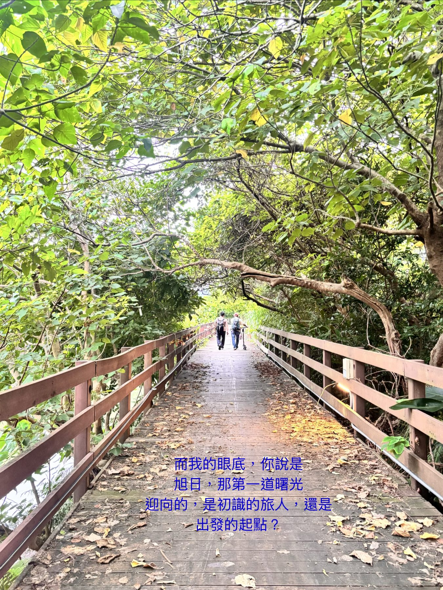
而我的眼底，你說是旭日，
那第一道曙光迎向的，
是初識的旅人，還是出發的起點？
篇章
每一章，是這條溪的一個段落，也是一種看待生命的角度。
反思「雜草」與「雜河」的標籤。打破五分港溪被視為排水溝、無名支流的階級感：每一種流動都有其神聖性。
考據這條河如何從「主流」變成「遺留」，以及被體制切割之後，依然自成一格的孤獨。
以牧野式的細膩觀察，寫那些不被邀請的「雜草」，寫水蠟燭與風車草如何抓緊崩落的土堤——一種野生的反擊。
溪水灌溉著台北最後的農耕地。那是一種與都市節奏格格不入、緩慢的流動。
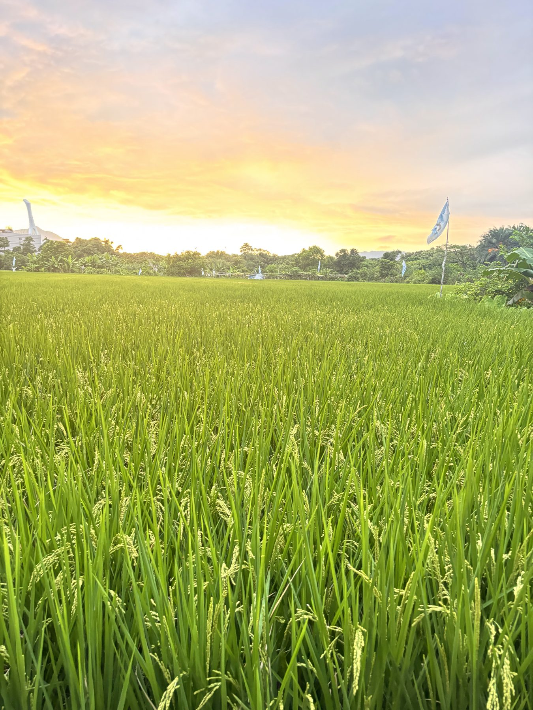
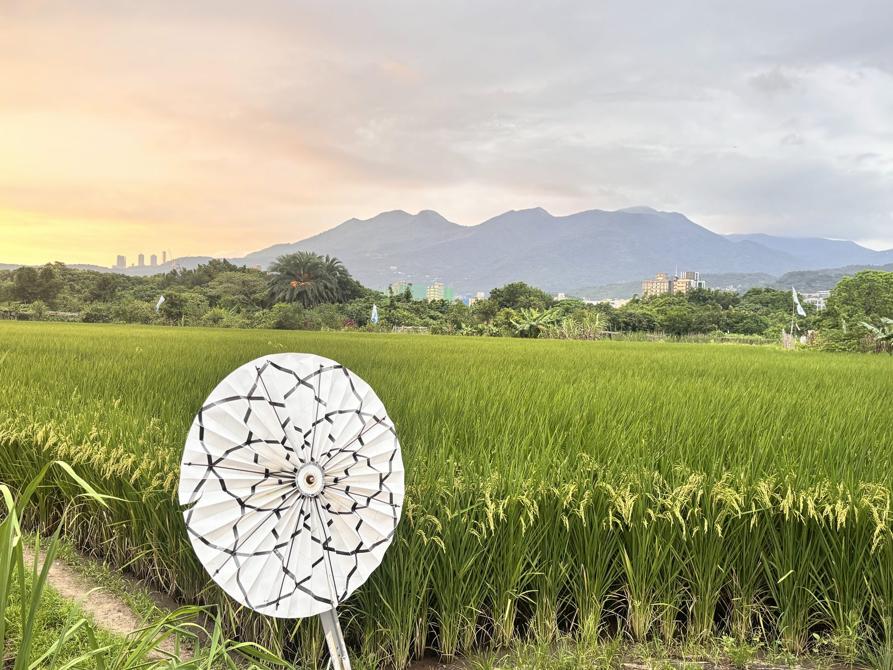
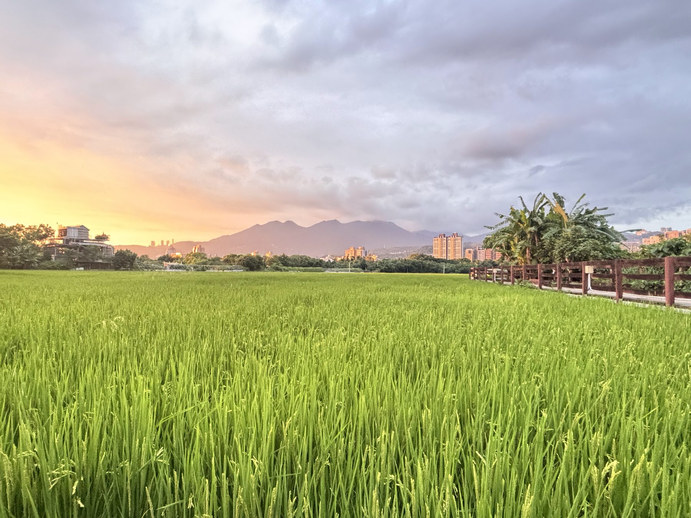
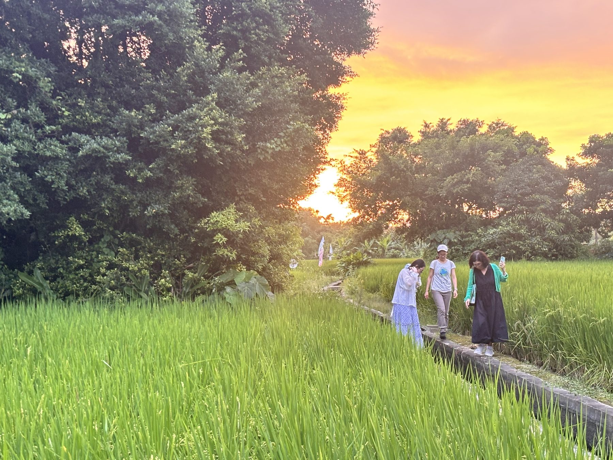
在溪邊活動的人，和這條溪的關係是「非正式」的，就像野草一樣與體制保持距離——人與自然最原始、最不加修飾的連結。
直面溪水的氣味、顏色，與其中掙扎的吳郭魚。一條不被呵護的河，如何用自己的速度進行微弱的自淨。
玻璃帷幕與廢河道並置的視覺突兀：人類文明在擴張時，如何對身邊的自然視而不見。
當視覺隱去，聲音成為主角。蟲鳴、水鳥的驚起，那些只在黑暗中現形的生命，讓溪流成為一條隱形的生物廊道。


斷點與死胡同，是人生困境的隱喻。一條河即便被截斷，依然會尋找地勢、滲入地底，或在暴雨時溢出——不論如何，都要流動下去。
回望這段不到兩公里的旅程。因為看見了每一株草，所以看見了森林；因為看見了這段殘存的溪流，所以讀懂了整座城市的靈魂。
哲學
從童年的新店溪、花蓮的馬太鞍溪、五分港溪，到最後的淡水河。四條河，昇華為四個層次。
流動，是不與巨石爭辯
童年的新店溪遭遇峽谷與險灘，激起無數水花。河流從不與擋路的巨石硬碰硬，它總是順應地形，繞道而行。
成為一條河，是學會「柔軟的堅持」。挫折不是終點，而是改變流向、激發創見的契機。
生命，是歷史與他者的交織
馬太鞍溪不是個人的孤島，它連結了《光復鄉誌》、部落記憶與土地紋理。
唯有將自己投入更大的歷史與社群洪流，生命才有了厚度。我們不只是一滴水，我們就是眾人與土地共同匯聚成的那條河。
眾生平等，沒有一滴水是多餘的
一條舊河道、一道細流，卻與心靈深深相通。世上沒有雜草，河流也沒有清淤之分。
澎湃的大江與被遺忘的舊河道，各自滋養一方生態。看見自己的微小，同時肯定自己獨一無二的日常價值。
包容與復歸
泥沙俱下的慈悲。眾流匯聚，夾雜泥沙、繁華、污染與傷痕，卻以最平靜的姿態流向台灣海峽。真正的成熟不是絕對的純潔，而是看盡繁華、吞下污濁，仍將它們沉澱為滋養海岸的養分。
失去名字的自由。河水湧入大海，便不再叫新店溪或淡水河；失去「河流」的名字，卻獲得了海洋的無邊無際。
走讀
晴天、雨天、黃昏，都要親自走一趟。這一次是黃昏：一群人站進洲美平原的稻田，背後是大屯山，天邊正在燒。
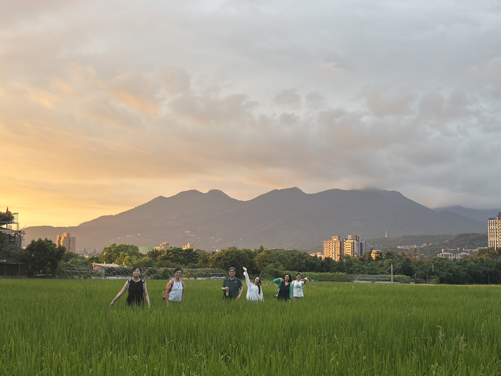
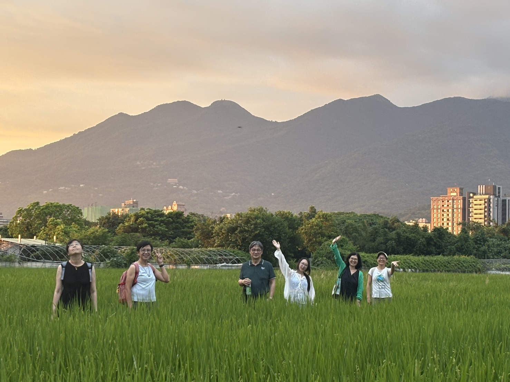
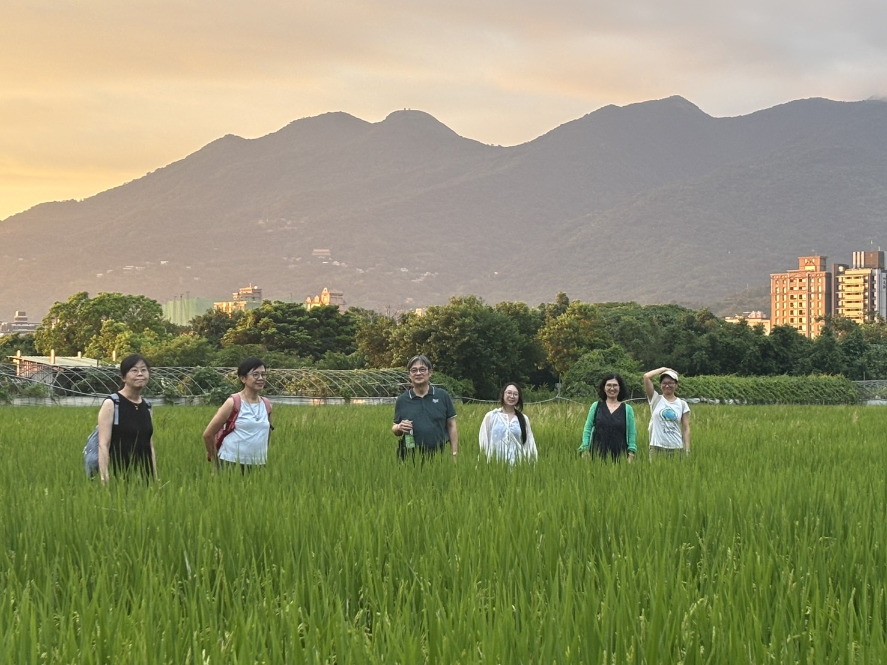
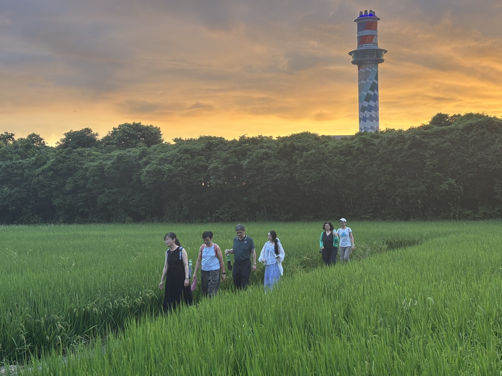
結語
我曾以為寫河是為了記錄風景，最後才明白，那是靈魂的內省。生命的最高境界不是抵達某個終點，而是認清自己就是那條奔流不息的河—— 無論身處急流還是舊河道，我們都在流動；
而只要還在流動，生命就永遠清澈。
一條河即便沒有大海作為終點，它流過的每一秒，都有意義。